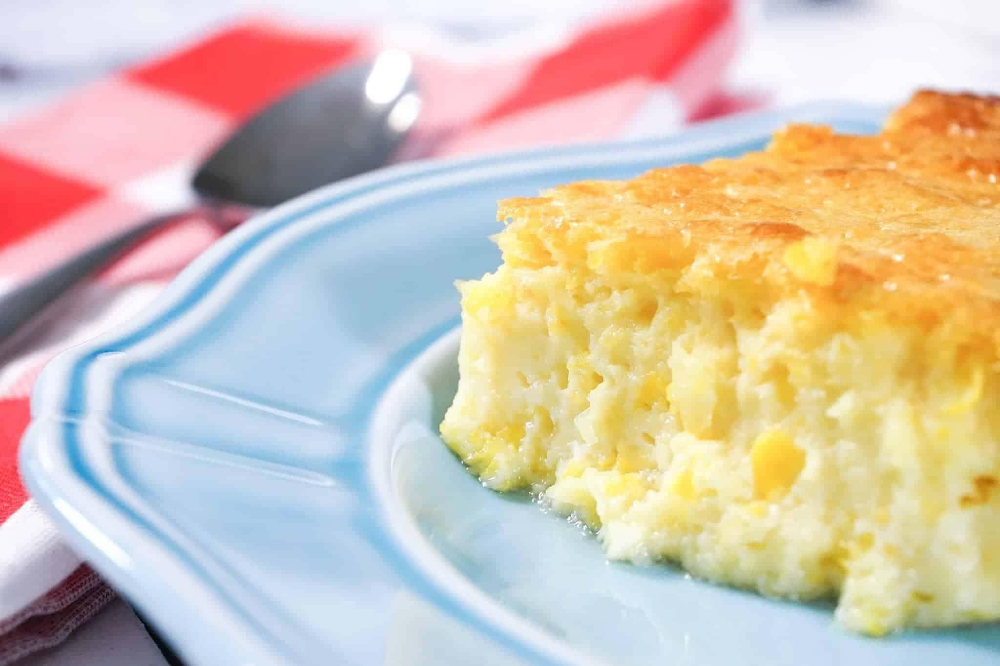

Corn Soufflé

Description
A sinfully delicious dish that is sure to be a hit at any meal! The sharp swiss and creamy corn come together to create a very rich and savory casserole. My mom has been making this every Thanksgiving by popular demand, and the leftovers are coveted by any that are lucky enough to have them!
Ingredients
- 8 oz sour cream
- 15 oz white corn
- 15 oz cream corn
- 1 stick butter (melted)
- 16 oz shredded swiss cheese
- 1 box Jiffy corn muffin mix
Steps
- Set the swiss cheese aside for the end.
- In a large bowl, mix all remaining ingredients together.
- Pour mixture into a greased casserole dish.
- Bake for 45 minutes at 350 degrees.
- Top with shredded swiss and bake for 15 more minutes.
- Enjoy!
Back to home